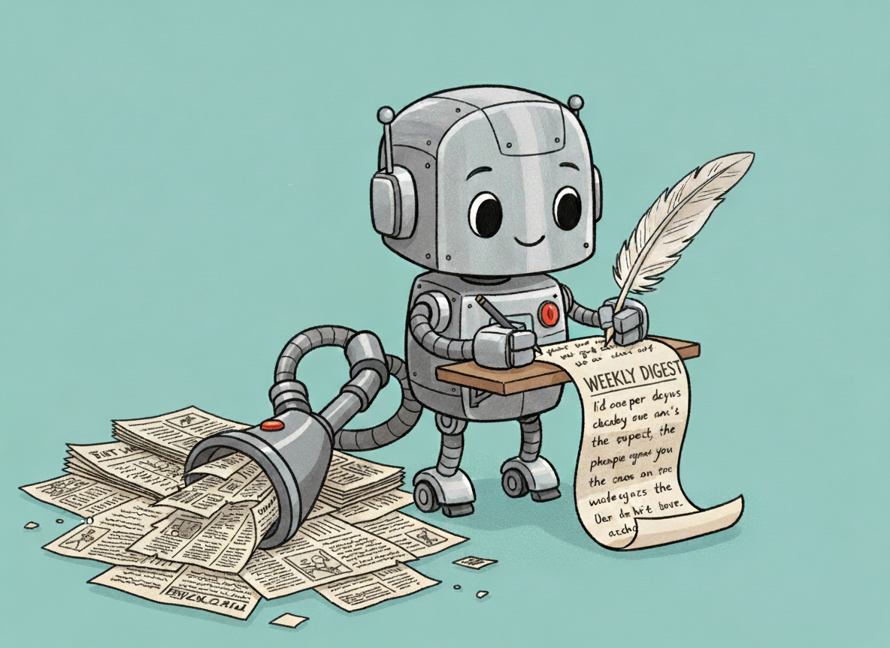

One newsletter to rule them all
Building an AI-powered RSS digest 🤖

I pay good money for an Economist subscription, yet sometimes I don't read it for months. I genuinely enjoy their analysis (that's why I subscribed in the first place), but I simply don't think about reading it 🤷. At the same time, I also don't want to be subscribed to five different newsletters to cover all the topics I am interested in.
What I do want is one newsletter once a week that gives me an overview of topics I care about. Therefore, I built this little tool to do exactly that: an AI powered RSS digest.
In short, it fetches RSS feeds and sends me a weekly summary of what The Economist covered that week. Essentially, it is my own personalized newsletter. And that is pretty cool 😎.
The way it works is super simple! Let's get into the components briefly.
Components
RSS
RSS is a sort of relic from the beginning of the internet: one XML file that contains the date, headline, description, and link to an article.
Most publishers support it! Including The Guardian and The New York Times. You can have a peek at a live RSS feed example here.
My digest currently uses The Economist's feeds, but you could plug in any RSS source you like.
LLM
Once the headlines and descriptions from the week are collected, they're sent to a language model along with a custom prompt (your prompt would of course be different).
This step costs literally a few cents. I use DeepSeek API, and one query costs less than one cent, so with $1 of credit, you are covered for years. Alternatively, you can use free (but less private) models from openrouter.ai.
The model digests the feeds and writes a summary in HTML format.
Email & HTML
The LLM output gets wrapped in a simple HTML template and emailed straight to me. Here's an example digest.
I use Gmail for sending, but any SMTP setup would work.
GitHub Actions
To keep everything running automatically, I use GitHub Actions with a cron job to trigger the script once a week. The format is very flexible - I could also run it every day, every hour, once a month, or on weekends at 10 AM.
Pros and Cons
Now, I have one newsletter to rule them all and I am prompted to read The Economist again. I am happy.
Of course it's not perfect. The model will still probably pick articles randomly, or add a creative twist that was not in the source (hallucination happens). I see it more as a hint of what The Economist has been focusing on that week and as a reminder that I could spend half an hour catching up on their reporting.
Moreover, there are still cases where human curation wins. Especially for deep analyses or discovering new sources. However, this system can also do more than human curation when it comes to niche combination of interests. I, for example, ask it to give me inspiration for data driven stories. This is a very specific wish that I can not get anywhere else.
So instead of manually skimming dozens of feeds, an AI model can summarize, organize, and email you the highlights. In a world drowning in recommendation algorithms that I have no control of whatsoever, this actually feels somewhat refreshing.
Inspiration
This little experiment was inspired by David Caswell's essay, The Consumer Experience of AI-Mediated News. He explores how AI can help serve us information that is most relevant to us, instead of what is most clickable and in the process empower us instead of overwhelm. It's a long read, but a good one!
Future
The current setup handles a single feed configuration and one email output. Next, I would love to explore scaling it up: multiple digests, different prompts.
The prompt design is still in its early stages too. There is A LOT of room to experiment with tone, structure, and the types of insights the AI emphasizes.
Try It Yourself
If this sounds like your kind of nerdy project, you can set this up yourself. Follow in the readme in github repository. That's it! Your personalized, AI-powered RSS newsletter.
I'd love to hear from you if you try!